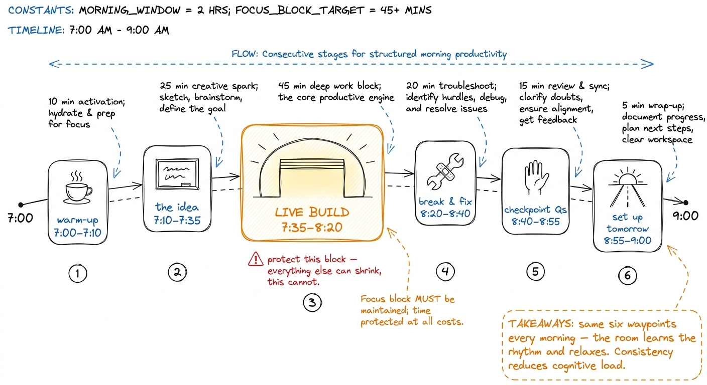
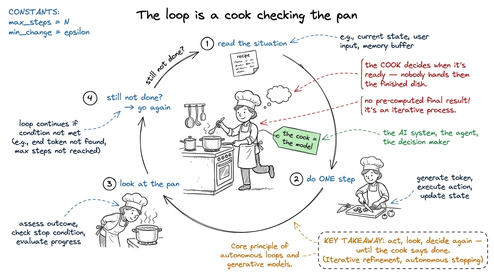
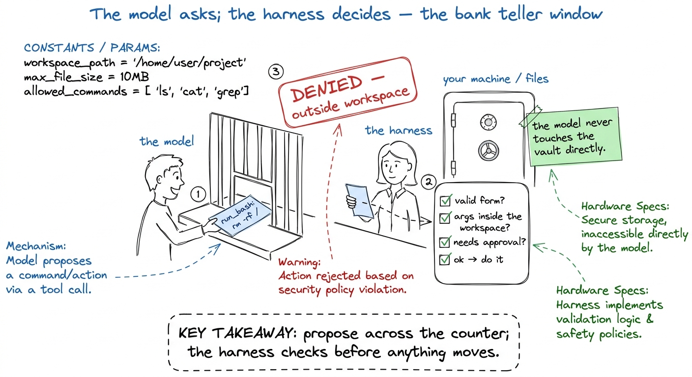
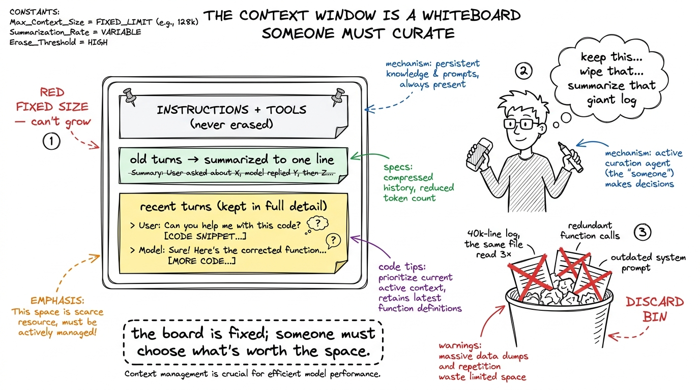
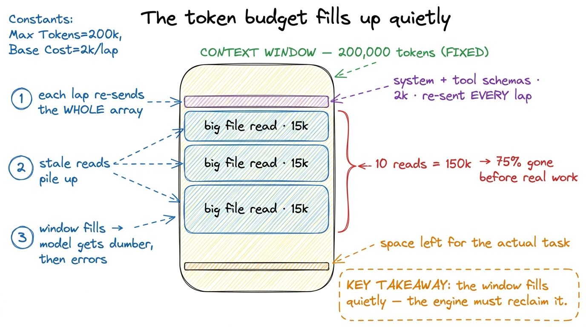

Lecture plans: Days 1-3, block by block
By the end of this chapter you can walk into the room on Day 1, 2, or 3 with a clock in your head and a chalk plan on the board — you'll know exactly what to draw at 7:05, what to build live at 7:40, and which question to ask at 8:30 to check that the room is still with you.
The three morning sessions build the bottom three layers of the harness, one per day: the loop (Day 1), tools and guardrails (Day 2), and the context engine (Day 3). This chapter is not about what those layers are — you learned that in the layer chapters. It's about how to spend the two hours so the room learns it too.
Every morning runs 7:00–9:00 AM IST. Every morning has the same skeleton — tell the students that on Day 1 so the rhythm becomes comforting:
- 0:00–0:10 — warm-up + "yesterday in one breath" recall.
- 0:10–0:35 — the idea, at the board, with the metaphor first.
- 0:35–1:20 — the live build (this is the heart; guard it fiercely).
- 1:20–1:40 — break it on purpose, then fix it.
- 1:40–1:55 — checkpoint questions + "what this still can't do."
- 1:55–2:00 — set up tomorrow, one sentence.

figure rendering · The shape of every morning: six waypoints on a two-hour ribbon, with tNow let's plan each morning.
Day 1 — the loop: agency is born
The goal of Day 1 is emotional as much as technical: by 9:00 the room should have felt an agent decide, act, and iterate on its own, with no human between the laps. Everything today serves that one moment.
7:00–7:10 — warm-up. No recall yet (it's Day 1). One provocation on the board: write messages → [model] → one message. Say: "This is all a model is. No memory, no hands, no clock. Today we give it a body."
7:10–7:35 — the idea, metaphor first. Draw the loop as a metaphor before a single line of code.

figure rendering · The loop taught as a cook who does one step, checks the pan, and decidNow translate the metaphor into the five-step cycle in words on the board, still no code: (1) ask the model, (2) did it ask for a tool?, (3) if yes, run the tool, (4) feed the result back, (5) repeat. Draw it as a five-box cycle. Circle box 2 in red — "this is where the agent decides whether it's done." Reveal the three drawings left to right — brain-in-a-jar, cook-and-pan, the five-box cycle — and don't erase them; you'll point back at all three during the build. Keep the right two-thirds of the board clear for code.
7:35–8:20 — THE LIVE BUILD. Build the bare harness from your-first-bare-harness, live, narrating each piece against the board. This is the centerpiece of the whole day.
call_model — "the brain in the jar, the whole AI part is six lines." (2) TOOLS + run_tool — two tiny tools, read_file and run_bash, "these are the hands." (3) The while True loop — "the heartbeat that ties them together." Type it, don't paste it — the students must see the loop grow line by line. When you write the stop-condition line, slow down and point at the red circle on the board.The payoff — reserve energy for it. Run the agent on a real request: "Read pyproject.toml, tell me the Python version, then list the test files." Then be quiet and let the room watch it take three laps by itself — read the file, run ls, answer — with nobody touching the keyboard.
ls. It looked at what it had, decided it wasn't done, and acted again. That decision — made by the agent, not by me — is the entire difference between an agent and a script." That sentence is the peak of Day 1.8:20–8:40 — break it, then fix it. Remove the if reply.stop_reason != "tool_use": return line and re-run on a vague request. Let it loop two or three times re-reading the same file, then Ctrl-C it. "Who decides when we stop? We just deleted that. The loop only ends when the model stops asking for tools — remove that check, or let the model never stop, and it runs forever. Real harnesses add a max-turns guard on top." Put the line back. This makes the stop condition felt, not just stated.
8:40–8:55 — checkpoint questions. Ask, don't tell. Good questions for Day 1:
- "Where does the agent's memory live in our code?" (The
messagesarray — it grows every lap.) - "Who decides the agent is finished — us or the model?" (The model, via the stop reason. This is the load-bearing answer; if they get it, they got the day.)
- "Our
run_bashwill happily runrm -rf. What did we forget?" (A guardrail — which sets up Day 2 perfectly.)
run_tool: "Our code reads those words and actually runs the command. The model proposes; our harness disposes." Draw a clear line between "model's words" and "our code that acts on them." Students who miss this are lost for the rest of the week, so spend the time.8:55–9:00 — set up tomorrow. One sentence: "We just handed an autonomous loop a run_bash with no seatbelt. Tomorrow we give it hands it can't hurt anyone with — tools and guardrails."
Day 2 — tools and guardrails: hands, safely
Goal of Day 2: the room should leave believing that a tool is a contract the model reads, and that the harness — not the model — decides whether a proposed action actually runs. By 9:00 they've watched a dangerous command get stopped at the gate.
7:00–7:10 — recall. Now you have yesterday to lean on. "In one breath: what's the loop?" Take three answers from the room. Then the hook: "Yesterday our agent could run any shell command. Today we make that safe — and it turns out 'safe' is half the work of a real harness."
7:10–7:35 — the idea, metaphor first. Two metaphors today, one for each half of the layer.

figure rendering · Guardrails drawn as a bank teller window: the model can ask for anythiThen draw the technical translation right beside it — split the board in two. Left half: the two metaphors (job-application form on top, bank-teller window below). Right half: the gate pipeline as five numbered boxes top to bottom, in the semantic colors — purple validate → blue path-check → orange approval gate → green execute → blue bounded-result. You'll build code that mirrors those five boxes exactly, so students can point from a line of code to a box on the board.
7:35–8:20 — THE LIVE BUILD. Take yesterday's bare harness and add the gate. This is a satisfying build because it's an upgrade of code they already understand.
run_tool with a check(name, args) that path-checks: does the file path stay inside the workspace? Reject with a clear message if not. (3) Add a permission gate: auto-approve reads, but for write_file and run_bash, print the proposed command and require a y/n. Keep each step under ten lines. Run the agent after each so the room sees the behavior change with the code.y/n. "The model genuinely tried to do that. And our fifteen lines of harness said no. That is the difference between a demo you screenshot and an agent you'd let run on your actual repo." The room feels the seatbelt click.8:20–8:40 — break it, then fix it. In a disposable temp directory, flip the permission gate to auto-approve-everything and let the agent run a rm on a dummy file. "See how fast that happened? No pause, no question. Now imagine that dummy file was your git history." Restore the gate. This makes the cost of no guardrail visceral without ever risking a real file — always demo destructive behavior in a scratch dir you don't care about.
8:40–8:55 — checkpoint questions.
- "A tool has two halves. What are they?" (The schema the model reads, and the function we run.)
- "The model asked to run
rm -rf ~. Walk me through what happens in our harness." (Proposal → validate → path-check fails / approval gate pauses → denied. If they can narrate the pipeline, they own the layer.) - "Why do we auto-approve
read_filebut notwrite_file?" (Reads don't change the world; writes and shell commands do. Blast radius.)
8:55–9:00 — set up tomorrow. "Now our agent has safe hands and can loop as long as it likes. But every lap, the entire conversation gets re-sent to the model — and the context window is finite. Tomorrow: what happens when the conversation gets too big, and who decides what to keep."
Day 3 — the context engine: staying coherent
Goal of Day 3: the room should leave understanding that the context window is a fixed budget, that it fills up and gets expensive, and that a context engine deliberately chooses what to spend it on. This is the most abstract of the three mornings, so lean harder on the metaphor and the live demo of the window actually filling.
7:00–7:10 — recall. "Two breaths: the loop, and the gate." Then the hook — and make it a number. "Every single lap of yesterday's loop, we re-send the whole conversation to the model. Read a 40,000-line log? That's now in every future call. Today we find out why that's a problem and what to do about it."
7:10–7:35 — the idea, metaphor first.

figure rendering · The context engine drawn as a curator at a fixed whiteboard, keeping iThen the number that makes it real:

figure rendering · The context budget as a to-scale stack: a tiny cached prefix, then big7:35–8:20 — THE LIVE BUILD. Build a minimal context engine on top of Day 2's harness. Keep it concrete — three small, visible mechanisms.
messages so the window filling is visible on screen. This is the demo's spine; students must watch the number climb. (2) Clip + dedup — cap any single tool result at N characters and skip re-adding a file already in context. Watch the number stop exploding. (3) Compaction — when messages crosses a threshold, replace the oldest turns with a one-line summary and keep the recent ones verbatim. Watch the number drop mid-run while the agent keeps working.8:20–8:40 — break it, then fix it. Disable clipping and compaction, then feed the agent a task that reads several big files. Let messages blow past the window until the API rejects the call (or the printout shows you're way over budget). "That's the wall every long-running agent hits. The context engine is the only reason a real agent doesn't hit it on every serious task." Re-enable, re-run, cross the same task successfully. The contrast is the lesson.
8:40–8:55 — checkpoint questions.
- "Why is the same conversation re-sent every single lap? Isn't that wasteful?" (Yes — the model is stateless; the window is its only memory each call. This closes the loop back to Day 1's
messagesarray.) - "The system prompt never changes — why keep it pinned at the very front?" (So the provider's prompt cache can reuse it and you don't pay to re-send it every lap.)
- "What's the difference between clipping and compaction?" (Clipping shortens one big thing at the door; compaction summarizes many old turns. Different tools, same goal: spend the budget well.)
8:55–9:00 — set up tomorrow. "Our agent is now smart, safe, and coherent — but it's mortal. One Ctrl-C, one crash, and everything is gone. Tomorrow: durability — how to make an agent that survives death."
A note on running behind
You will run behind. Every mentor does. Here is the triage order, memorize it: cut theory before you cut the build; cut the break-it demo before you cut the checkpoint questions; never cut the aha moment. The aha — the agent's second lap, the blocked command, the shrinking token count — is the one thing a student remembers a week later. Protect it above all else.
You can now teach
- The shared six-waypoint skeleton of every 7–9 AM morning, and why the live build is the one block you never let shrink.
- Day 1 (the loop) block by block: brain-in-a-jar → cook-and-pan metaphor → build the bare harness live → break the stop condition → the "second lap without you" aha.
- Day 2 (tools + guardrails) block by block: the job-application-form and bank-teller metaphors → build the gate pipeline as an upgrade → block a dangerous command live → the seatbelt-clicks aha.
- Day 3 (the context engine) block by block: the fixed-whiteboard metaphor → the 200k-token budget arithmetic → build counter + clip/dedup + compaction → the shrinking-token-count aha.
- The checkpoint questions for each day that reveal whether the load-bearing idea landed (who decides done; walk the gate; why re-send every lap).
- The triage order for running behind — cut theory, then the break-it demo, but never the aha — and the exact line to say when you're out of time.